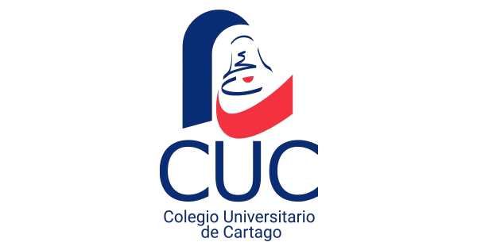

A
Andrey Calderón Vega
Integrante del proyecto
Proyecto académico · Almacenes de Datos
Este proyecto presenta un dashboard interactivo orientado al análisis del impacto de la canasta básica sobre los ingresos de la población costarricense, utilizando procesos ETL, visualización de datos y análisis predictivo como apoyo a la interpretación de indicadores económicos.

Equipo responsable del desarrollo, análisis y presentación del proyecto.
Integrante del proyecto
Integrante del proyecto
Integrante del proyecto
Accesos directos al repositorio y a los datos utilizados.